Missile Command - fully restored
Sunday, July 21, 2013
I did something I’ve never done.....and to be honest I was a little freaked out about it at the beginning. I bought an arcade that someone else had fully restored.
For the past year and a half, my hobby (and passion) has been to find and restore vintage arcade machines - I love doing it because of the work involved, the learning involved, and the games themselves! The following comic from Penny Arcade pretty much sums up why I do it: http://www.penny-arcade.com/comic/2013/07/01
But when someone listed a fully restored Missile Command for $400 (he had to downsize and get rid of many of his games), I was thinking:
-
•I love Missile Command.
-
•I would easily buy a beat up Missile Command for a couple hundred bucks, and spend at least another couple hundred bucks (probably a lot more) restoring it to it’s original glory.
-
•So why not buy one that is already restored for the same price or less?
Plus, this guy meticulously restored it himself - the side art, bezel and marquee was in immaculate shape, and he had:
-
•Restored the control panel (new powder coated art)
-
•Restored the coin door & Atari label
-
•Put a brand new (New Old Stock, or NOS) monitor in it that was stunning
-
•Put a brand new (New Old Stock, or NOS) Atari Missile Command trackball in it (these are very large and expensive)
-
•Rebuilt the power supply board with all new capacitors (to ensure that it lasts another 30 years)
-
•Added the Missile Command/Super Missile Attack add-on board to the original Missile Command PCB (which allows you to save your high scores, configure DIP switches without having to open the arcade, and switch between Missile Command and a harder version called Super Missile Attack by pressing both start buttons at the same time)
These things cost a lot of $$ - just the monitor alone was more than $400 he said (the cost of the whole arcade), and each NOS item runs well into the hundreds of dollars. I’d say that he sunk well over a couple of grand into it (not including his time, effort and supplies), and he was visibly sad to see it go. On the flip side, I definitely appreciate his hard work, and as a huge Missile Command fan, I’ll ensure that the arcade is taken very good care of ;-)
I’ve seen many arcade cabinets, and you can generally tell the condition of the cabinet itself by checking how dirty the inside is at the bottom, looking for water damage (especially at the bottom, which causes the wood to swell), as well as looking at the shape of the wood and feet underneath the arcade. For a 33 year old arcade, I’d expect it to be quite worn, but this machine was is incredible shape - it was either taken very good care of when it was in a store/pub/arcade, or it was part of someone’s private collection from early on. Either way, it is definitely worth preserving.
OK - now for some pics! Here is my friend Matt helping me unload it, as well as it running in my basement:
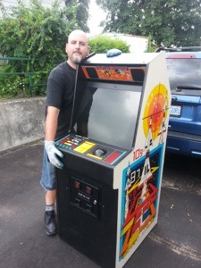
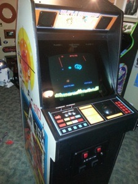
Here is the inside - the PCB is in great shape, and the power supply (above it) has all new capacitors). Also note how clean the bottom of the arcade is:
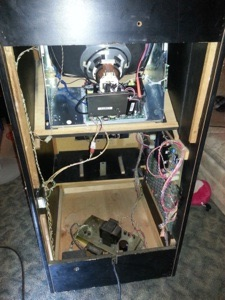
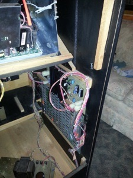
Here are some pics of the NOS monitor and trackball from the inside of the cabinet:
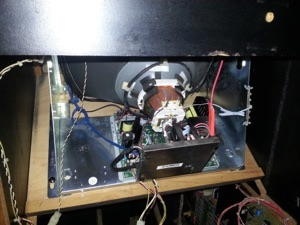
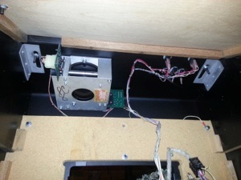
Here is the operating instruction sheet (perfectly intact) on the inside of the back panel:

Here is the marquee and control panel:
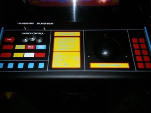
Here are some pics of the side art:
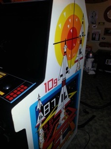
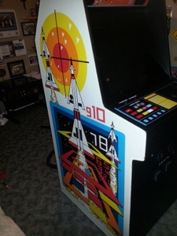
And here are some pics of the coin door and how good it looks in my rec room:
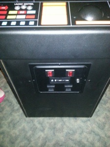
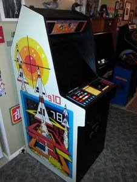
I am totally digging this arcade - I’ve played a ton of games on it already and I just got it today (the beauty of buying something that is fully restored). And for those who are fans of the sitcom Chuck, yes I played it with the song Tom Sawyer by RUSH playing in the background ;-)